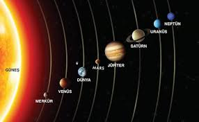

|

Güneş Sistemi Nedir?
Güneş Sistemi, merkezinde Güneş’in yer aldığı ve onun etrafında dönen gökcisimlerinden oluşan büyük bir sistemdir.
Güneş, sistemin en büyük ve en ağır cismidir; tüm kütlenin neredeyse tamamını oluşturur.
Güneş’in çekim gücü sayesinde gezegenler, uydular, asteroitler ve diğer gökcisimleri belirli yörüngelerde dönmeye devam ederler.
Güneş Sistemi yaklaşık 4,6 milyar yıl önce, uzaydaki gaz ve toz bulutlarının kütle çekimiyle çökmesi sonucu oluşmuştur.
Bu çökme sırasında merkeze yoğunlaşan madde Güneş’i oluşturmuş, çevresinde kalan maddeler ise gezegenler ve diğer gökcisimlerini meydana getirmiştir.
Güneş’e en yakın gezegenden başlayarak sıralama şu şekildedir: Merkür, Venüs, Dünya, Mars, Jüpiter, Satürn, Uranüs ve Neptün.
İlk dört gezegen karasal, yani taşlı ve katı yapılıdır. Diğer dört gezegen ise gaz ve buzdan oluşur, bu nedenle “dev gezegenler” olarak adlandırılır.
Gezegenlerin dışında sistemde cüce gezegenler, örneğin Plüton ve Ceres gibi, asteroitler, kuyruklu yıldızlar ve meteoritler de bulunur.
Mars ile Jüpiter arasında yer alan Asteroit Kuşağı’nda binlerce küçük taş ve metal parçası vardır.
Neptün’ün ötesinde ise Kuiper Kuşağı ve Oort Bulutu bulunur. Bu bölgeler buzlu gökcisimleriyle doludur ve Güneş Sistemi’nin en dış sınırlarını oluşturur.
Dünya’nın tek uydusu olan Ay gibi, diğer gezegenlerin de birçok uydusu vardır. Örneğin Jüpiter’in onlarca uydusu bulunur.
Kuyruklu yıldızlar Güneş’e yaklaştıklarında ısınır, üzerlerindeki buzlar buharlaşır ve geriye uzanan parlak bir kuyruk oluştururlar.
Sonuç olarak, Güneş Sistemi, merkezinde Güneş’in bulunduğu, etrafında sayısız gökcisminin düzenli bir şekilde hareket ettiği karmaşık ama dengeli bir yapıdır.
Bu sistem, hem Dünya’nın hem de diğer gezegenlerin varlığını mümkün kılan büyük bir kozmik ailedir.
|